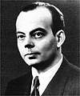

《小王子》小说、欣赏、资料
小王子目录
首页、1--3 章4--6 章
7--9 章
10-12章
13-15章
16-20章
21-23章
24-25章
26-27章
> 小王子作者
小王子解读与分析
小王子下载（PDF版）
小王子作者专题
小王子读后感集锦
《小王子》作者圣埃克苏佩里
圣埃克苏佩里有两个双重身份：飞行员与作家。这两个生涯在他是相辅相成、相映生辉。从《南方邮件》到《小王子》的十六年间，仅出版了六部作品，都以飞机为工具，从宇宙的高度，观察世界，探索人生。这些作品篇幅不多，体裁新颖，主题是：人的伟大在于人的精神，精神的建立在于人的行动。人的不折不挠的意志可以促成自身的奋发有为。在现代文学史，圣埃克苏佩里被认为是最早关注人类状况的作家之一。
圣埃克苏佩里写《小王子》时，自己为小说画了插图。插画拙扑稚气，梦境迷幻。法语版《小王子》1943年在美国出版。评论界和读者对这本书感到意外。一直写飞机的圣埃克苏佩里这次写了一篇童话！童话往往是大人讲给孩子听的故事，而《小王子》是把故事讲给大人听。那几句不无幽默的献词是理解这本书的钥匙。随着岁月的推移，《小王子》的寓意在严酷的现实中愈来愈明显。茫茫宇宙中，目前知道只有一个星球住着人，也只有一个人类文明，人的感情也全部倾注在这个星球上。在这个孤单、桀骜不驯的地球上，人既坚强而又脆弱，文明既可长存又易毁灭，这取决于人的智慧。这部充满诗情画意的小小作品又像预言似的提出，物质丰富弥补不了精神匮乏，人不能忘记精神实体。几十年后《小王子》在全世界成为大人、小孩、东方人、西方人都爱读的作品。
>>>> 连接更多有关小王子作者的专题文章
Copyright © 2005-2013 Xiaowangzi.org